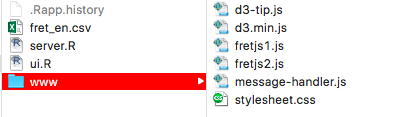
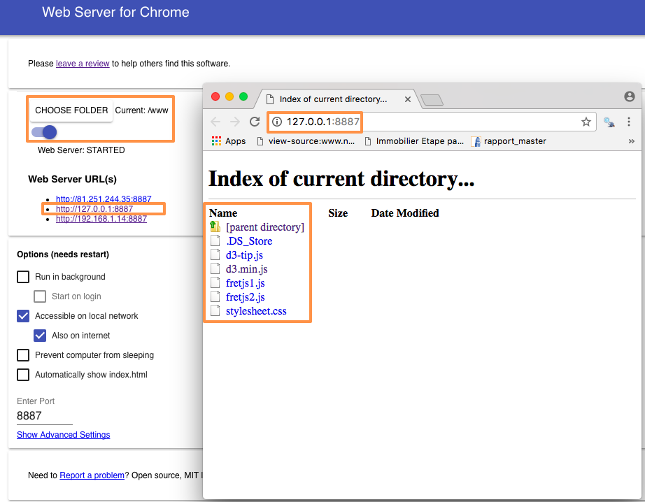

Hello everyone,
In this post we will focus on how to send a message from R to javascript. More precisely, we will focus on the basic keywords and knowledge to integrate a d3.js graph into shiny, just like here. If you have any issue to make shiny and javascript communicate after reading this post, I suggest you to go back to this simple shiny app from Rstudio.
First of all, create a folder where you will put your data file (.csv, .txt, etc..) and your app.R (or ui.R and server.R). In this folder, you will create a new folder that you will name “www”. Put your .css and .js file inside the www folder.

To make R and d3.js communicate, you will have to put some keywords in the server part, the ui part and the .js file.
In the server.R file, write which data you want to send to javascript in an observe({ }) function. Just like below:
function(input, output, session) {
observe({
dataSendToJs = "Hello World"
session$sendCustomMessage(type = 'nameOfTheMessage',dataSendToJs)
})
}session$sendCustomMessage( ) allows you to send your data from shiny to javascript.
In the ui.R file, source the javascript document with a tag function.
fluidPage(
titlePanel("Example"),
fluidRow(
#Shiny way to integrate html code in the web page
tags$head(tags$script(src = "message.js"))
)
)Your .js file has to begin with Shiny.addCustomMessageHandler("nameOfTheMessage", function(message) { like in the following example. Don’t forget that the message represents data from R that javascript will read so it’s better to transform the data to json data. You can do it in R via the function jsonlite::toJSON().
Shiny.addCustomMessageHandler("nameOfTheMessage",
function(message) {
alert(JSON.stringify(message));
});Now it should work! You can find the whole process in this repository. We started with something simple but you can do more complex things by applyng the same logic.
Be careful, if you’re working locally, you have to make some changes: First, you need to have a webserver. I use web server for chrome. If you choose to use the same web server, it’s very simple.
First, in “CHOOSE FOLDER”, you have to choose the www folder that you made previously, then a web server url will appear. Click on it, then a new web page with the different files from www should pop-up.

In ui.R (or the ui part of your single-file shiny app), source d3.min.js and all .css and .js files as follows:
#http://127.0.0.1:8887 represents the web server URL
tags$head(tags$script(src = "http://127.0.0.1:8887/d3.min.js"))The following video may help you if you have issues to make your application run locally:
Now it should work :)
You can see a complete and reproducible example over here.
Don’t hesitate to contact me if you have any comments or suggestions.